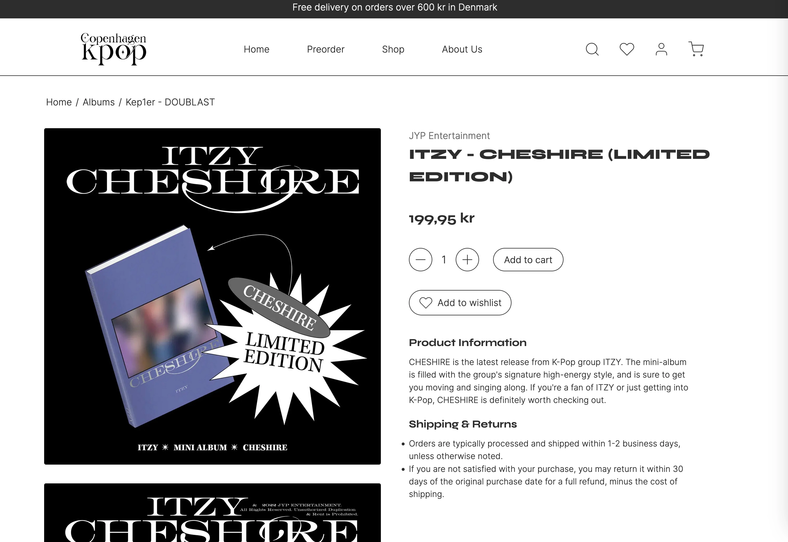
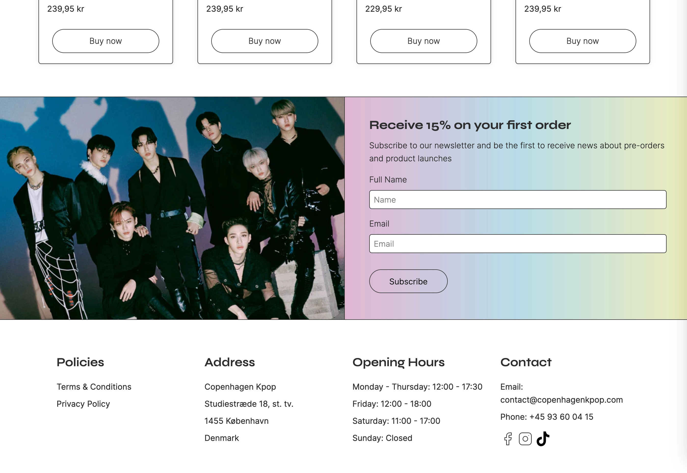

05.02.01 Redesign og Temadokumentation
I denne opgave skulle vi redesigne en virksomheds website. Siden skulle være kodet fra bunden og skulle inkludere indholdsproduktion i form af tekst, foto, og video.
Vi valgte at gå med firmaet Copenhagen Kpop, som sælger Kpop albums og merch. Firmaet havde i bund og grund en fint fungerende website, men vi følte vi kunne tune den med nogle små forbedringer og nogle nye ideer.
Vores mål med løsningen var at lave en skarp, professionel og sammenhængende side. Vi forsøgte også at undgå for meget larm og støj med vores design, da det var selve sidens indhold, der var i fokus.
Vi arbejdede godt sammen i vores gruppe, og sørgede for, så godt som muligt, at uddele arbejdet ligelidt. Vi havde hvert vores ansvarsområde, og forsøgte at kommunikere klart med hinanden på tværs af dem.
Jeg forbedrede klart mine gruppearbejde-kompetencer, og fik lært en masse om, hvordan man arbejder sammen på et webudviklings-projekt.
05.02.01 Redesign Procesdokumentation  